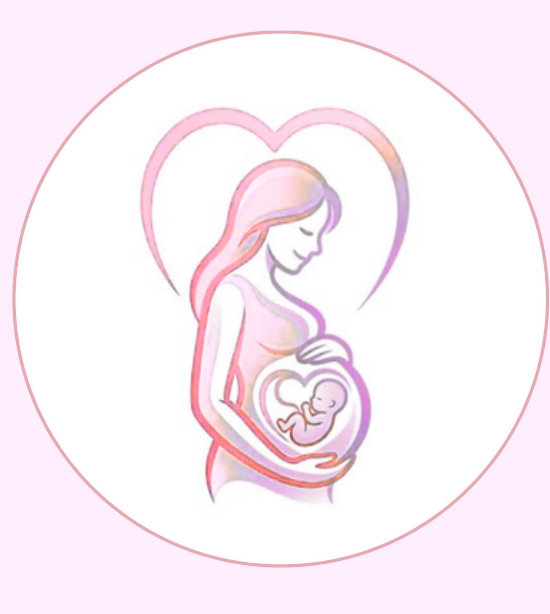

ACOLHIMENTO • INFORMAÇÃO • CUIDADO
Um espaço criado para ajudar mulheres a compreender o pré-natal, seus cuidados e a importância do acompanhamento durante a gestação.

O Pré Vida foi criado para investigar e enfrentar essa barreira por meio de informação clara, orientação e caminhos que facilitem o acesso ao cuidado.
Escolha a situação que mais se aproxima do que você está vivendo e encontre, dentro do Pré Vida, um caminho para buscar informação e cuidado.
Escolha a situação que mais se aproxima do que você está vivendo. O Pré Vida vai indicar onde encontrar informações que podem ajudar.
Você será direcionada para a parte do Pré Vida que pode ajudar.
Digite uma palavra, como “vacina”, “exame”, “direito” ou “posto”.
Marque o que você já fez. Se algo ainda não estiver concluído, clique em “Como faço?” para encontrar orientações dentro do Pré Vida.
Responda às perguntas com SIM ou NÃO. Ao final, o Pré Vida indicará uma seção que pode ser útil para a sua situação.
O pré-natal é o acompanhamento realizado durante toda a gestação, por meio de consultas, exames e orientações voltadas à promoção da saúde da mulher e do bebê.
Esse cuidado permite acompanhar o desenvolvimento da gestação, identificar precocemente possíveis fatores de risco e prevenir ou acompanhar complicações.
O acompanhamento envolve consultas periódicas, exames e orientações que ajudam a monitorar a saúde materna e fetal.
O pré-natal possibilita identificar precocemente fatores de risco e situações que precisam de atenção.
O acompanhamento deve começar o quanto antes e continuar ao longo da gestação, de acordo com as necessidades de cada mulher.
O acompanhamento adequado busca promover a saúde da mulher e do bebê, contribuindo para a identificação e prevenção de possíveis complicações durante a gestação e para um parto mais seguro.
Cada gestação é única. Este guia apresenta mudanças, sintomas e cuidados que podem ocorrer ao longo da gravidez. O acompanhamento deve sempre considerar as necessidades individuais de cada mulher.
Clique em um dos meses acima para conhecer informações sobre essa fase da gestação.
A adesão ao pré-natal não depende apenas da decisão individual da gestante. Diferentes fatores podem dificultar o início e a continuidade desse acompanhamento.
O desconhecimento sobre a importância do pré-natal, dos serviços disponíveis e dos cuidados necessários pode contribuir para o início tardio ou para dificuldades na continuidade desse acompanhamento.
Distância, dificuldades de transporte e acesso aos serviços de saúde podem dificultar a realização e a continuidade das consultas, mesmo quando a mulher reconhece a importância do pré-natal.
As condições de vida e os recursos disponíveis podem interferir na possibilidade de iniciar e manter o acompanhamento durante a gestação. Por isso, a adesão não deve ser vista apenas como uma escolha individual.
Trabalho, tarefas domésticas, cuidados com outros filhos e outras responsabilidades podem dificultar a presença nas consultas e a continuidade do acompanhamento.
Quando o acompanhamento não acontece adequadamente, pode haver menor oportunidade de identificar e acompanhar precocemente situações que precisam de atenção durante a gestação.
Ampliar o acesso a orientações confiáveis e acessíveis pode contribuir para reduzir a barreira da falta de informação e incentivar a busca e a continuidade do pré-natal.
A falta de informação pode ultrapassar a dúvida e se tornar uma barreira ao cuidado. Quando dificulta o acesso ou a continuidade do pré-natal, pode também reduzir oportunidades de orientação, prevenção e acompanhamento da saúde da mulher.
A falta de informação pode fazer com que a mulher não compreenda a importância de iniciar e manter o pré-natal. Com isso, o acompanhamento pode acontecer de forma tardia ou inadequada, reduzindo as oportunidades de identificar e acompanhar precocemente possíveis alterações durante a gestação.
Quando a mulher não conhece a importância do acompanhamento, pode deixar de receber orientações essenciais sobre alimentação, vacinação, exames, sinais de alerta, cuidados durante a gestação e preparação para o parto. Essas informações são importantes para que ela participe ativamente do próprio cuidado.
Sem informações adequadas, a gestante pode ter mais dificuldade para identificar situações que precisam de atenção e compreender quando é necessário procurar um serviço de saúde. Isso pode dificultar a busca por atendimento no momento adequado.
A falta de conhecimento pode gerar dúvidas e insegurança sobre as mudanças que acontecem durante a gravidez, os cuidados necessários e o próprio acompanhamento. Ter acesso a informações confiáveis pode ajudar a mulher a compreender melhor esse período e tomar decisões mais conscientes sobre sua saúde.
Quando a mulher não conhece os serviços disponíveis ou não compreende a importância das consultas, exames e vacinas, pode deixar de utilizar recursos importantes para o acompanhamento da gestação. Dessa forma, a falta de informação pode contribuir para a perda de oportunidades de cuidado e prevenção.
Informação → compreensão da importância do pré-natal → maior segurança para buscar o cuidado → adesão ao pré-natal → acompanhamento da saúde da mulher.
Informação não substitui o atendimento de saúde, mas pode ajudar a mulher a reconhecer a importância do pré-natal, conhecer seus direitos, buscar os serviços disponíveis e participar ativamente do próprio cuidado.
Conheça os profissionais que podem participar do cuidado durante a gestação.
Clique em um dos ícones acima para conhecer sua atuação no cuidado durante a gestação.
Encontre unidades de saúde próximas de você. Para isso, o Pré Vida poderá utilizar a localização do seu dispositivo, sempre mediante sua autorização.
Permita o acesso à sua localização para encontrar serviços de saúde próximos.
Informações que podem ajudar a gestante a compreender melhor o acompanhamento e participar de forma mais informada do próprio cuidado.
Clique em um dos cartões acima para conhecer mais informações sobre essa etapa do cuidado.
A realização contínua do pré-natal permite que a mulher tenha acompanhamento durante a gestação e acesso a informações e cuidados de saúde.
O acesso à informação é um dos elementos que podem contribuir para a compreensão da importância desse acompanhamento e para a busca pelos serviços de saúde.
Conheça o nosso grupo e entenda por que criamos este projeto.
Somos Letícia Monteiro, Sofia Andrade e Vinícius Resende, alunos do Colégio Santa Maria Minas.
O Pré Vida foi criado como parte de um projeto de iniciação científica, a partir do nosso interesse pela área da saúde e, especialmente, pela temática da obstetrícia.
Realizamos uma revisão bibliográfica utilizando sites oficiais de instituições de saúde e artigos científicos para reunir informações confiáveis sobre o pré-natal e sua adesão.
Reunir informações confiáveis e acessíveis sobre o pré-natal, contribuindo para ampliar o acesso ao conhecimento e incentivar a busca e a continuidade desse acompanhamento.
Ministério da Saúde — Governo Federal.
Organização Mundial da Saúde (OMS).
Artigos científicos utilizados na revisão bibliográfica do projeto.
As informações do Pré Vida devem ser utilizadas como material educativo e não substituem a avaliação de profissionais de saúde.